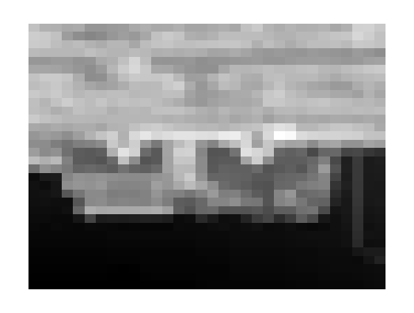
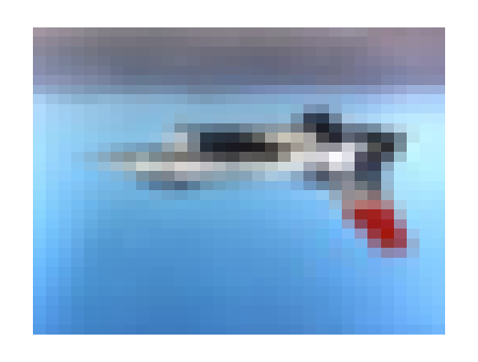
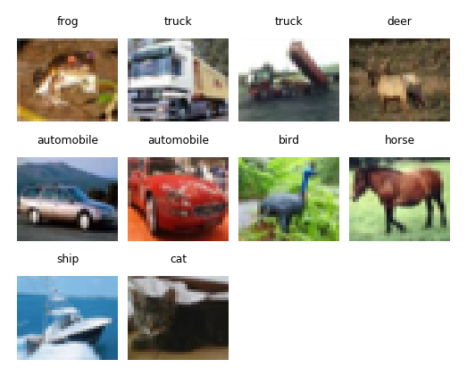
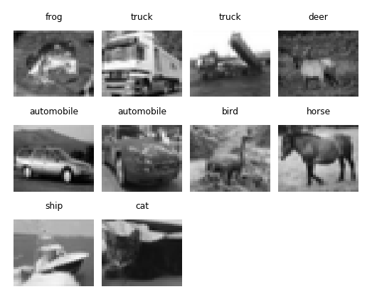
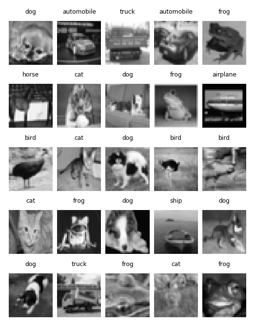
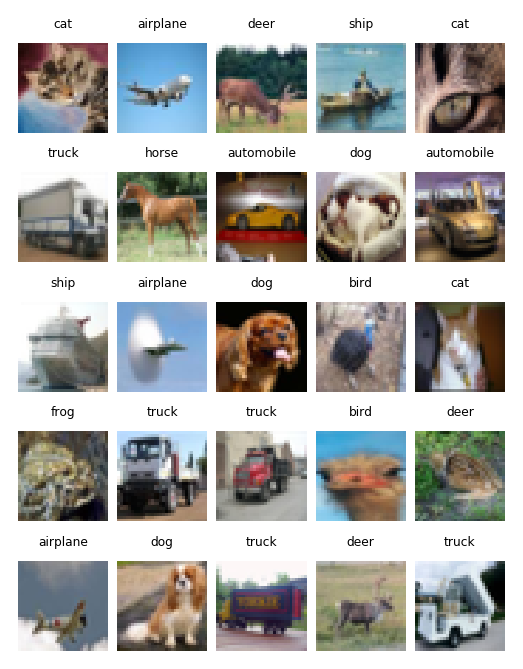

Linear Predictive Coding with Tensorflow¶
First, we would like to create a two-layered linear predictive coding model using tensorflow and keras. It seems likely that due to the unique nature of the state-and-weights-estimation, we need to somewhat start at the beginning. It seems to make the most sense to first fit the model using numpy arrays and then transform it to tensorflow tensors.
Input structure¶
Input structure – Raw¶
[1]:
import tensorflow as tf
[2]:
cifar_data = tf.keras.datasets.cifar10.load_data()
[3]:
cifar_pictures = cifar_data[0][0]
[146]:
def get_bw(cifar_pictures):
return cifar_pictures.mean(axis = 3)
[147]:
cifar_bw = get_bw(cifar_pictures)
[148]:
cifar_bw.shape
[148]:
(50000, 32, 32)
We therefore consider these 50000 different 32x32 black-and-white pictures as our input.
[25]:
import plotnine as gg
import numpy as np
example = cifar_bw[np.random.choice(range(cifar_bw.shape[0]), size = 1)[0]]
---------------------------------------------------------------------------
NameError Traceback (most recent call last)
<ipython-input-25-c4334b4405e2> in <module>
1 import plotnine as gg
2 import numpy as np
----> 3 example = cifar_bw[np.random.choice(range(cifar_bw.shape[0]), size = 1)[0]]
NameError: name 'cifar_bw' is not defined
[26]:
import pandas as pd
example_p = pd.DataFrame({
'x': list(range(example.shape[0]))*example.shape[1],
'y': np.repeat(list(range(example.shape[1])), repeats = example.shape[0]),
'bw': example.flatten()
})
---------------------------------------------------------------------------
NameError Traceback (most recent call last)
<ipython-input-26-a948b85b6c94> in <module>
1 import pandas as pd
2 example_p = pd.DataFrame({
----> 3 'x': list(range(example.shape[0]))*example.shape[1],
4 'y': np.repeat(list(range(example.shape[1])), repeats = example.shape[0]),
5 'bw': example.flatten()
NameError: name 'example' is not defined
[151]:
picture = (gg.ggplot(example_p, gg.aes(x = 'x', y = 'y', fill = 'bw')) +
gg.geom_tile() +
gg.theme_void() +
gg.theme(legend_position = 'none') +
gg.scale_fill_gradient(low = 'white', high = 'black'))
[152]:
picture

[152]:
<ggplot: (-9223363272876077326)>
[162]:
example_color = cifar_pictures[np.random.choice(cifar_pictures.shape[0])]
[168]:
example_color[:,:,2]
[168]:
array([[230, 220, 211, ..., 245, 247, 253],
[236, 227, 216, ..., 252, 253, 255],
[238, 227, 216, ..., 251, 252, 255],
...,
[155, 149, 143, ..., 162, 162, 161],
[154, 149, 144, ..., 158, 158, 156],
[162, 155, 151, ..., 153, 151, 149]], dtype=uint8)
[169]:
example_color_p = pd.DataFrame({
'x': list(range(example_color.shape[0]))*example_color.shape[1],
'y': np.repeat(list(range(example_color.shape[1])), repeats = example_color.shape[0]),
'r': example_color[:,:,0].flatten(),
'g': example_color[:,:,1].flatten(),
'b': example_color[:,:,2].flatten()
})
def hex_2(i):
hex_2 = hex(i)[2:]
assert len(hex_2) <= 2
if len(hex_2) == 1:
hex_2 = '0' + hex_2
return str(hex_2)
example_color_p['rgb'] = [
'#' + hex_2(r) + hex_2(g) + hex_2(b) for r, g, b in zip(example_color_p['r'],
example_color_p['g'],
example_color_p['b'])
]
[171]:
color_picture = (gg.ggplot(example_color_p, gg.aes(x = 'x', y = 'y', fill = 'rgb')) +
gg.geom_tile() +
gg.theme_void() +
gg.theme(legend_position = 'none') +
gg.scale_fill_manual(
values = {key: key for key in example_color_p['rgb'].unique()}
))
[204]:
data = cifar_pictures[range(10),:,:,:]
image_id = list(np.repeat(list(range(10)),repeats = 32*32))
flattened_x = list(np.repeat(list(range(32)), repeats = 32))*10
flattened_y = list(range(32))*32*10
[199]:
len(flattened_x)
[199]:
10240
[215]:
dataframe = pd.DataFrame({
'image_id': np.array(image_id),
'x': np.array(flattened_x),
'y': np.array(flattened_y),
'r': data[:,:,:,0].flatten(),
'g': data[:,:,:,1].flatten(),
'b': data[:,:,:,2].flatten(),
'bw': data.mean(axis=3).flatten()
})
dataframe['rgb'] = np.array([
'#' + hex_2(r) + hex_2(g) + hex_2(b) for r, g, b in zip(dataframe['r'],
dataframe['g'],
dataframe['b'])
])
dataframe['rgb_bw'] = np.array([
'#' + hex_2(int(bw))*3 for bw in dataframe['bw']
])
[8]:
dataframe.head()
---------------------------------------------------------------------------
NameError Traceback (most recent call last)
<ipython-input-8-93498b4b2d50> in <module>
----> 1 dataframe.head()
NameError: name 'dataframe' is not defined
[172]:
color_picture

[172]:
<ggplot: (8763978730237)>
Input structure – level 1¶
The same should be extended to a couple of pictures, thus handling a four-dimensional array, which we would like to flatten. Parallely, the labels, though not important for the purpose of the analysis itself, would contribute to an intuition behind these pictures.
[4]:
import predicode as pc
[5]:
cifar = pc.ImageData(cifar_pictures)
[6]:
df = cifar.dataframe(range(10))
[18]:
df.head()
[18]:
| image_id | x | y | r | g | b | bw | rgb | rgb_bw | |
|---|---|---|---|---|---|---|---|---|---|
| 0 | 0 | 0 | 0 | 59 | 62 | 63 | 61.333333 | #3b3e3f | #3d3d3d |
| 1 | 0 | 1 | 0 | 43 | 46 | 45 | 44.666667 | #2b2e2d | #2c2c2c |
| 2 | 0 | 2 | 0 | 50 | 48 | 43 | 47.000000 | #32302b | #2f2f2f |
| 3 | 0 | 3 | 0 | 68 | 54 | 42 | 54.666667 | #44362a | #363636 |
| 4 | 0 | 4 | 0 | 98 | 73 | 52 | 74.333333 | #624934 | #4a4a4a |
[19]:
labels = cifar_data[0][1]
[34]:
labels[range(10)]
lab = next(iter(labels[range(10)]))
cifar_labels[int(lab[0])]
[34]:
'frog'
[35]:
cifar_labels = ['airplane', 'automobile', 'bird', 'cat', 'deer',
'dog', 'frog', 'horse', 'ship', 'truck']
df_labels = pd.DataFrame({
'label': [int(lab[0]) for lab in labels[range(10)]],
'label_text': np.array([cifar_labels[int(lab[0])] for lab in labels[range(10)]])
})
[41]:
df_labels.head()
[41]:
| label | label_text | |
|---|---|---|
| 0 | 6 | frog |
| 1 | 9 | truck |
| 2 | 9 | truck |
| 3 | 4 | deer |
| 4 | 1 | automobile |
[39]:
(gg.ggplot(df, gg.aes(x = 'x', y = 'y', fill = 'rgb')) +
gg.geom_tile() +
gg.theme_void() +
gg.theme(legend_position = 'none') +
gg.scale_fill_manual(
values = {key: key for key in df['rgb'].unique()}
) +
gg.facet_wrap('image_id', labeller = lambda x: df_labels['label_text'][int(x)]) +
gg.scale_y_reverse())

[39]:
<ggplot: (8794444281927)>
[40]:
(gg.ggplot(df, gg.aes(x = 'x', y = 'y', fill = 'rgb_bw')) +
gg.geom_tile() +
gg.theme_void() +
gg.theme(legend_position = 'none') +
gg.scale_fill_manual(
values = {key: key for key in df['rgb_bw'].unique()}
) +
gg.facet_wrap('image_id', labeller = lambda x: df_labels['label_text'][int(x)]) +
gg.scale_y_reverse())

[40]:
<ggplot: (-9223363242411426409)>
Input structure – level 2¶
[1]:
import predicode as pc
[2]:
cifar = pc.Cifar10()
[3]:
cifar.dataframe(n_random = 12).head()
len(cifar.dataframe(n_random = 12))
cifar.labels.head()
[3]:
| label | label_text | |
|---|---|---|
| 0 | 6 | frog |
| 1 | 9 | truck |
| 2 | 9 | truck |
| 3 | 4 | deer |
| 4 | 1 | automobile |
[4]:
cifar.pictures(n_random = 25)

[4]:
<ggplot: (-9223363243287232035)>
[5]:
cifar.pictures(n_random = 25, mode = 'color')

[5]:
<ggplot: (-9223363243276476286)>